X298–X350¶
Isotomic Conjugates II
Isotomic conjugates of previously cataloged triangle centers, together with X2-Hirst inverses and radical centers.
X298–X350 (Isotomic Conjugates II) — 16 representative centers (from 53 in collection) constructed on acute reference triangle \((a, b, c) = (5, 6, 7)\) with unit baseline AB = \(1\).¶
X298ISOTOMIC CONJUGATE OF 1st ISOGONIC CENTER
X298 is the isotomic conjugate of 1st isogonic center.
X299ISOTOMIC CONJUGATE OF 2nd ISOGONIC CENTER
X299 is the isotomic conjugate of 2nd isogonic center.
X300ISOTOMIC CONJUGATE OF 1st ISODYNAMIC CENTER
X300 is the isotomic conjugate of 1st isodynamic center.
X301ISOTOMIC CONJUGATE OF 2nd ISODYNAMIC CENTER
X301 is the isotomic conjugate of 2nd isodynamic center.
X302ISOTOMIC CONJUGATE OF 1st NAPOLEON POINT
X302 is the isotomic conjugate of 1st Napoleon point.
X303ISOTOMIC CONJUGATE OF 2nd NAPOLEON POINT
X303 is the isotomic conjugate of 2nd Napoleon point.
X304ISOTOMIC CONJUGATE OF X19
X304 is the isotomic conjugate of X19.
X305ISOTOMIC CONJUGATE OF X25
X305 is the isotomic conjugate of X25.
X306ISOTOMIC CONJUGATE OF X27
X306 is the isotomic conjugate of X27.
X307ISOTOMIC CONJUGATE OF X29
X307 is the isotomic conjugate of X29.
X308ISOTOMIC CONJUGATE OF X39
X308 is the isotomic conjugate of X39.
X309ISOTOMIC CONJUGATE OF X40
X309 is the isotomic conjugate of X40.
X310ISOTOMIC CONJUGATE OF X42
X310 is the isotomic conjugate of X42.
X311ISOTOMIC CONJUGATE OF X54
X311 is the isotomic conjugate of X54.
X312ISOTOMIC CONJUGATE OF X57
X312 is the isotomic conjugate of X57.
X313ISOTOMIC CONJUGATE OF X58
X313 is the isotomic conjugate of X58.
X314ISOTOMIC CONJUGATE OF X65
X314 is the isotomic conjugate of X65.
X315ISOTOMIC CONJUGATE OF X66
X315 is the isotomic conjugate of X66.

X316DROUSSENT PIVOT
X316 = anticomplement of X187
X317ISOTOMIC CONJUGATE OF X68
X317 is the isotomic conjugate of X68.
X318ISOTOMIC CONJUGATE OF X77
X318 is the isotomic conjugate of X77.
X319ISOTOMIC CONJUGATE OF X79
X319 is the isotomic conjugate of X79.

X320ISOTOMIC CONJUGATE OF X80
X320 is the isotomic conjugate of X80.
X321ISOTOMIC CONJUGATE OF X81
X321 is the isotomic conjugate of X81.
X322ISOTOMIC CONJUGATE OF X84
X322 is the isotomic conjugate of X84.
X323ISOTOMIC CONJUGATE OF X94
X323 is the isotomic conjugate of X94.
X324ISOTOMIC CONJUGATE OF X97
X324 is the isotomic conjugate of X97.
X325-HIRST INVERSE OF X69
X325 is the X2-hirst inverse of X69.
X326ISOTOMIC CONJUGATE OF X158
X326 is the isotomic conjugate of X158.
X327ISOTOMIC CONJUGATE OF X182
X327 is the isotomic conjugate of X182.
X328ISOTOMIC CONJUGATE OF X186
X328 is the isotomic conjugate of X186.
X329ISOTOMIC CONJUGATE OF X189
X329 is the isotomic conjugate of X189.
X330ISOTOMIC CONJUGATE OF X192
X330 is the isotomic conjugate of X192.
X331ISOTOMIC CONJUGATE OF X219
X331 is the isotomic conjugate of X219.
X332ISOTOMIC CONJUGATE OF X225
X332 is the isotomic conjugate of X225.
X333CEVAPOINT OF X8 AND X9
X333 is the cevapoint of X8 and X9.
X334ISOTOMIC CONJUGATE OF X238
X334 is the isotomic conjugate of X238.
X335ISOTOMIC CONJUGATE OF X239
X335 is the isotomic conjugate of X239.
X336ISOTOMIC CONJUGATE OF X240
X336 is the isotomic conjugate of X240.
X337ISOTOMIC CONJUGATE OF X242
X337 is the isotomic conjugate of X242.
X338CEVAPOINT OF X115 AND X125
X338 is the cevapoint of X115 and X125.
X339ISOTOMIC CONJUGATE OF X250
X339 is the isotomic conjugate of X250.
X340ISOTOMIC CONJUGATE OF X265
X340 is the isotomic conjugate of X265.
X341ISOTOMIC CONJUGATE OF X269
X341 is the isotomic conjugate of X269.
X342ISOTOMIC CONJUGATE OF X271
X342 is the isotomic conjugate of X271.
X343ISOTOMIC CONJUGATE OF X275
X343 is the isotomic conjugate of X275.
X344ISOTOMIC CONJUGATE OF X277
X344 is the isotomic conjugate of X277.
X345ISOTOMIC CONJUGATE OF X278
X345 is the isotomic conjugate of X278.
X346ISOTOMIC CONJUGATE OF X279
The cevian triangle of X346 is perspective to the Ayme triangle; see X3610.
X347ISOTOMIC CONJUGATE OF X280
X347 is the isotomic conjugate of X280.
X348ISOTOMIC CONJUGATE OF X281
X348 is the isotomic conjugate of X281.
X349ISOTOMIC CONJUGATE OF X284
X349 is the isotomic conjugate of X284.

X350-HIRST INVERSE OF X75
X350 is the X2-hirst inverse of X75.